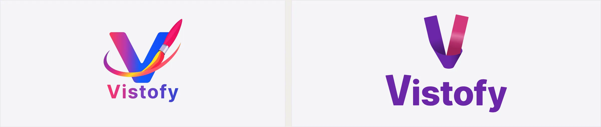
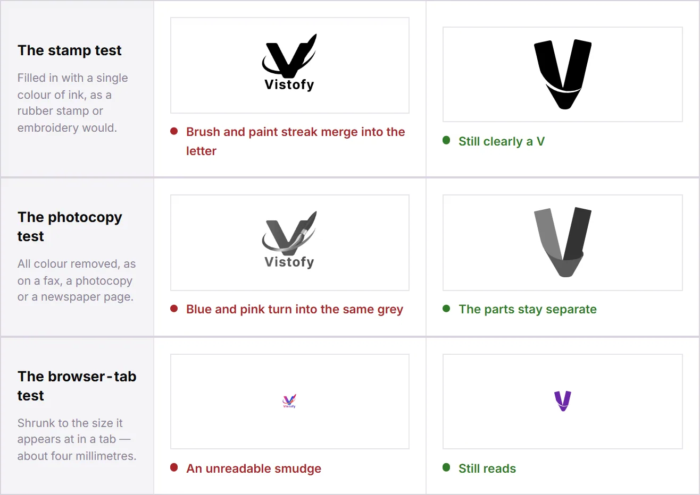
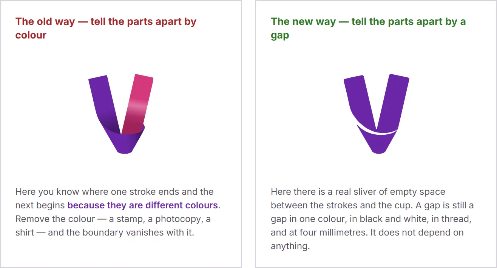
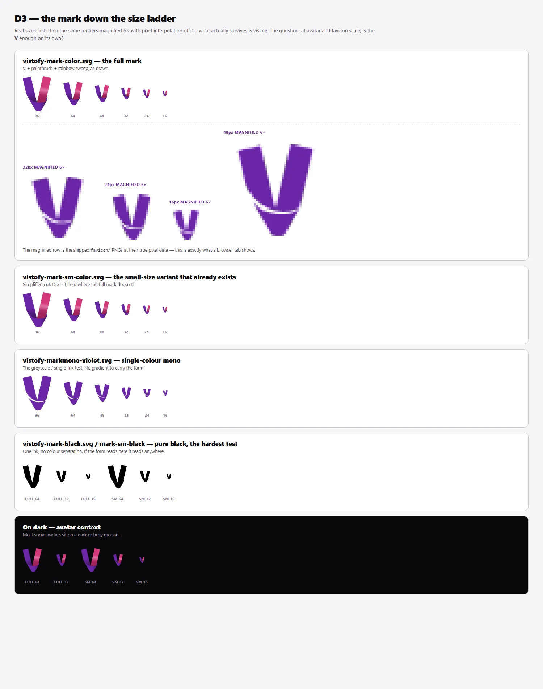
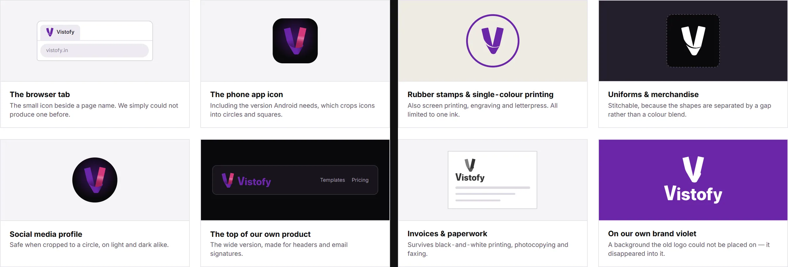
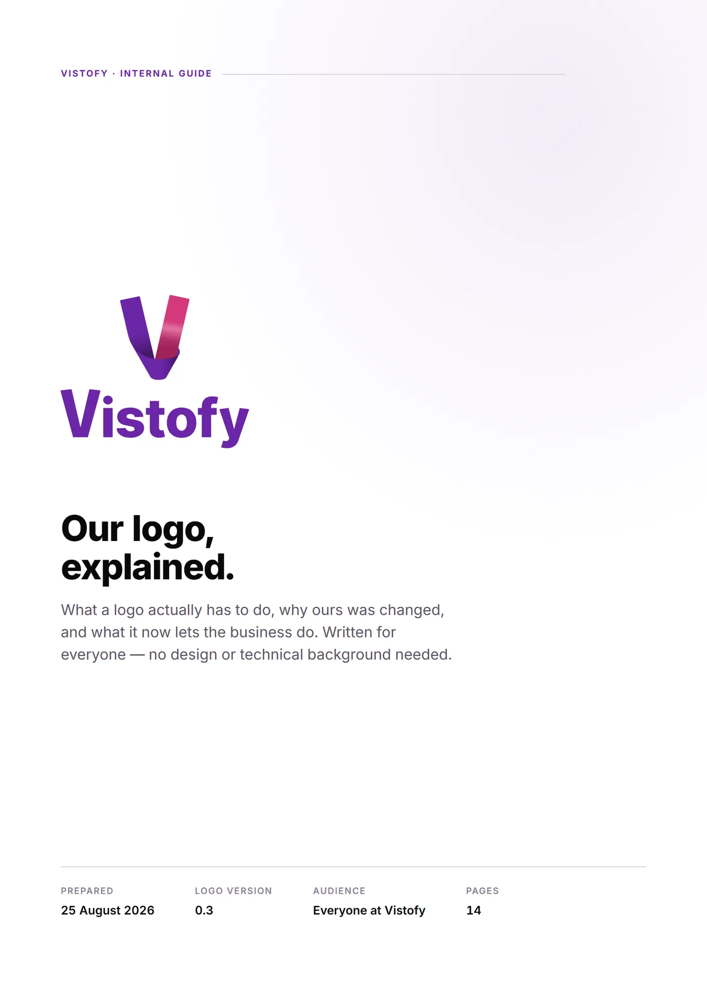
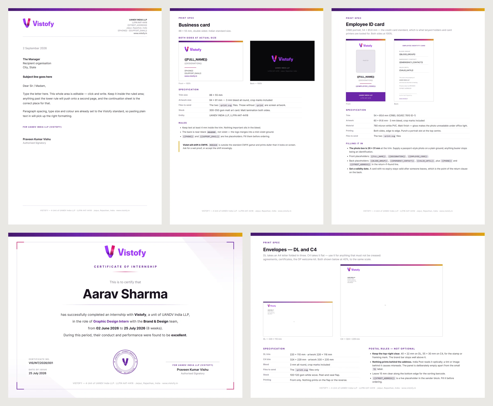
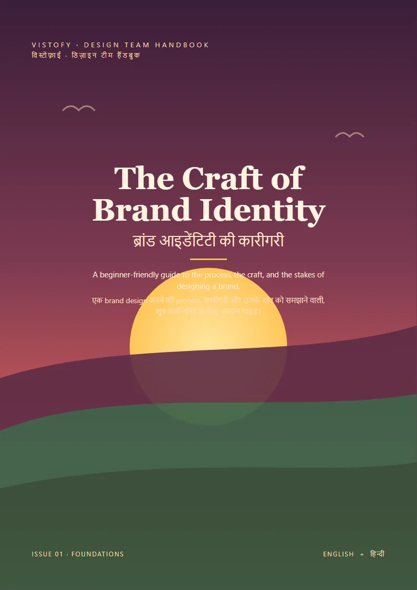

Vistofy — an identity that works at 16 pixels
Vistofy's logo was one large, full-colour artwork. I redrew it into a mark that survives a browser tab, a rubber stamp and a photocopy, then turned that one drawing into a production kit the whole company could use.

Context
Vistofy gives small businesses in India their marketing: festival posts, digital business cards, quotations, a simple website. Its customers are shop owners in smaller cities, and the brand turns up wherever they do: on a phone's home screen, on a printed invoice, as a rubber stamp at the counter.
When I joined in May 2026, the logo was a single piece of artwork: a V with a paintbrush, a metal band, a rainbow streak of paint and a looping ribbon. On a poster it was striking. Nobody had tried it small.

Left: the logo I inherited. Right: the redraw. The letter, the sense of movement and the idea of making something stayed. The brush, the band, the streak and the ribbon went.
Three tests it could not pass
Any logo has to survive three ordinary situations: printed in one colour of ink, photocopied, and shrunk to the size of a browser tab. Both versions went through the same three, with nothing retouched afterwards.

Stamp, photocopy, browser tab. The old mark failed all three; the new one passes each without help.
The photocopy result explains the rest. Once colour is removed, the old logo's blue leg and pink leg come out only 8% apart in brightness, the same grey to the eye, so the letter collapses. Counted on an identical canvas, the old artwork held 17,445 different shades. The new one holds 278. A rubber stamp can reproduce one.
The logo did not change because the old one was ugly. It changed because a logo has a job description, and the old one could only do the first line of it.
A gap instead of a colour change
The old mark told its parts apart by colour. The new one tells them apart by a sliver of empty space between the strokes and the cup. A gap survives one-colour printing, embroidery thread, a fax and four millimetres on a screen. A colour change does not. Every other decision in the system follows from that one.


The size ladder. Colour, single-colour and black versions, from signboard down to a 16 px favicon. Minimum sizes were measured by rendering each version, not estimated.
One drawing, one kit
From that drawing came the full set: the mark, the wordmark and two lockups in colour, white, black and single violet; favicons at 16, 24, 32 and 48 px; iOS, Android and maskable app icons; social avatars; and a company stamp in four colourways. Every file is generated from the master, so if a colour changes, the whole set rebuilds in seconds instead of being redrawn by hand.

Where it goes now: browser tab, app icon, profile picture, product header, and the single-colour world of stamps, uniforms and invoices.
Explaining it to people who aren't designers
A redraw takes away something people have got used to. So the change went to the company as Our logo, explained: fourteen pages for the founders, sales and the template team, with no design vocabulary and every claim shown side by side rather than described.

Internal guide, 14 pages, August 2026.
Stationery from one source of facts
The same thinking carried into 27 company documents: letterhead, business cards, envelopes, ID cards, certificates, invoices and letters. Each one is generated from a single file of company facts and checked before release. The expensive mistakes in stationery turned out to be factual and legal, not visual. A wrong registration number costs more than a wrong margin.

Letterhead, business card, employee ID, internship certificate, envelopes. Each spec sheet carries print size, stock and the rules for filling it in.
Teaching it
A brand only stays consistent if the people producing it understand it. The Craft of Brand Identity is a bilingual English–Hindi handbook for Vistofy's design team, built from the guide I wrote for junior designers.

Still open
The mark currently exists in two violets: the one it was drawn in and the one in the brand palette. Keeping both would quietly undo the point of the exercise, so the choice is with the founders.
I drew the new mark and wordmark in Illustrator and made the design decisions. The diagnosis, the size tests, the production kit, the stationery templates and the explainer were built with an AI assistant working to my direction; I reviewed the output and decided what shipped. The previous logo was not my work.